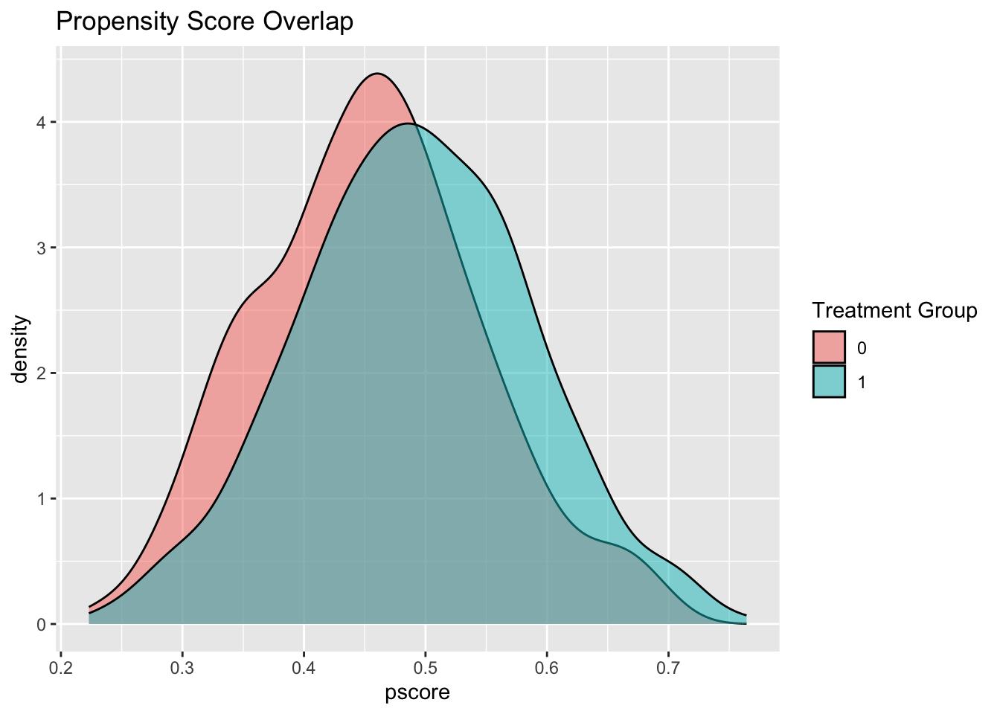

Chapter 8 Bayesian Structural Time Series for Causal Inference
8.1 Introduction
Bayesian Structural Time Series (BSTS) is a powerful statistical method for causal inference in settings where randomized controlled trials are infeasible, unethical, or impractical. This makes it invaluable for evaluating population-level health interventions, policy changes, and medical treatments. While traditional methods like difference-in-differences assume parallel trends between treatment and control groups—a condition that rarely holds in complex healthcare data—BSTS overcomes this limitation. It models complex temporal patterns (such as trends and seasonality) and learns an optimal, data-driven combination of control series to build a synthetic counterfactual.
The method’s foundation combines state-space modeling with Bayesian inference, enabling robust uncertainty quantification. Instead of providing a single point estimate of a causal effect, BSTS generates a full posterior distribution for the counterfactual outcome. This probabilistic approach provides a credible interval for the intervention’s effect, naturally integrating uncertainty from the model, its parameters, and the prediction itself. This comprehensive view is crucial for making informed decisions in healthcare.
BSTS models a time series by decomposing it into several unobserved components, such as a trend, seasonal effects, and the influence of regression variables. For a healthcare outcome \(y\_t\) observed from \(t=1\) to \(T\), with an intervention at time \(T\_0+1\), the model’s goal is to predict the counterfactual outcome—what would have happened to \(y\_t\) after \(T\_0\) if the intervention had not occurred.
The core model is specified as a state-space model, which consists of an observation equation and a state equation.
- Observation Equation: Links the observed data \(y\_t\) to the unobserved state vector \(\\alpha\_t\). \[y_t = Z_t^T \alpha_t + \epsilon_t, \quad \epsilon_t \sim \mathcal{N}(0, \sigma_t^2)\]
- State Equation: Describes how the state vector \(\\alpha\_t\) evolves over time. \[\alpha_{t+1} = T_t \alpha_t + R_t \eta_t, \quad \eta_t \sim \mathcal{N}(0, Q_t)\]
The state vector \(\\alpha\_t\) contains the interpretable components. A typical decomposition for a healthcare outcome might be: \[y_t = \mu_t + \gamma_t + \beta^T x_t + \epsilon_t\] where:
- \(\\mu\_t\) is the trend component, often modeled as a local linear trend, which allows the baseline level and growth rate to change over time. \[\mu_{t+1} = \mu_t + \delta_t + u_{\mu, t}\] \[\delta_{t+1} = \delta_t + u_{\delta, t}\]
- \(\\gamma\_t\) is the seasonal component, which captures periodic patterns (e.g., weekly hospital admission cycles or annual flu seasons).
- \(\\beta^T x\_t\) is the regression component, which models the contemporaneous relationship between the outcome \(y\_t\) and a set of control time series \(x\_t\) that are not affected by the intervention.
The causal effect at each post-intervention time point \(t \> T\_0\) is then estimated as the difference between the observed outcome and the predicted counterfactual: \[\text{Effect}_t = y_t - \hat{y}_t^{\text{counterfactual}}\] The model is fit using data only from the pre-intervention period (\(t \\le T\_0\)). It then projects the counterfactual outcome into the post-intervention period (\(t \> T\_0\)) to estimate the causal impact.
8.1.0.1 Control Variable Selection
A key feature of the BSTS framework is its ability to perform automatic variable selection for the regression component. This is typically achieved using spike-and-slab priors on the regression coefficients \(\\beta\_j\). Each coefficient’s prior is a mixture of two distributions: a “slab” (a diffuse distribution, like a Normal) and a “spike” (a distribution tightly concentrated at zero). \[\beta_j | \pi_j \sim (1 - \pi_j) \cdot \mathcal{N}(0, \tau^2) + \pi_j \cdot \delta_0\] Here, \(\\pi\_j\) is the probability of the coefficient being in the “spike” (i.e., effectively zero), and \(\\delta\_0\) is a point mass at zero. During the model fitting process (via MCMC), the posterior probability of each variable’s inclusion is estimated, allowing the model to automatically select the most relevant predictors from a potentially large set of control variables.
8.2 R Implementation examples Healthcare
8.2.1 Tobacco Tax Policy
We analyze the causal impact of a new tobacco tax on smoking-related hospital admissions. A state implements a significant tax increase per pack of cigarettes, while neighboring states do not. An experimental design is not feasible. The objective is to estimate the reduction in hospital admissions caused by the tax, accounting for seasonality, underlying trends, and other confounding factors.
The outcome variable is monthly smoking-related hospital admissions per 100,000 population, observed for 60 months. The tax is introduced at month 37. Control variables include unemployment rates, healthcare access indicators, demographic data, and admission rates from neighboring states without the tax change.
The following R code simulates data for this scenario and applies a BSTS model to estimate the causal effect.
## Warning: package 'bsts' was built under R version 4.5.1## Loading required package: BoomSpikeSlab## Warning: package 'BoomSpikeSlab' was built under R version 4.5.1## Loading required package: Boom## Warning: package 'Boom' was built under R version 4.5.1##
## Attaching package: 'Boom'## The following object is masked from 'package:stats':
##
## rWishart##
## Attaching package: 'BoomSpikeSlab'## The following object is masked from 'package:stats':
##
## knots## Loading required package: xts##
## ######################### Warning from 'xts' package ##########################
## # #
## # The dplyr lag() function breaks how base R's lag() function is supposed to #
## # work, which breaks lag(my_xts). Calls to lag(my_xts) that you type or #
## # source() into this session won't work correctly. #
## # #
## # Use stats::lag() to make sure you're not using dplyr::lag(), or you can add #
## # conflictRules('dplyr', exclude = 'lag') to your .Rprofile to stop #
## # dplyr from breaking base R's lag() function. #
## # #
## # Code in packages is not affected. It's protected by R's namespace mechanism #
## # Set `options(xts.warn_dplyr_breaks_lag = FALSE)` to suppress this warning. #
## # #
## #################################################################################
## Attaching package: 'xts'## The following objects are masked from 'package:dplyr':
##
## first, last##
## Attaching package: 'bsts'## The following object is masked from 'package:BoomSpikeSlab':
##
## SuggestBurnlibrary(ggplot2)
library(dplyr)
# -- 1. Simulate Healthcare Data --
set.seed(12345)
n_months <- 60
intervention_month <- 36
pre_period <- 1:intervention_month
post_period <- (intervention_month + 1):n_months
# Create time index
dates <- seq(from = as.Date("2020-01-01"), by = "month", length.out = n_months)
time_idx <- 1:n_months
# Generate seasonal components reflecting healthcare patterns
seasonal_respiratory <- 5 * sin(2 * pi * time_idx / 12 - pi/2) # Winter peak
seasonal_stress <- 3 * cos(2 * pi * time_idx / 12 + pi/4) # Holiday effects
# Generate baseline trend
baseline_trend <- 50 + cumsum(rnorm(n_months, mean = 0.1, sd = 0.5))
# Generate control variables (potential predictors)
unemployment_rate <- 6 + 2 * sin(2 * pi * time_idx / 12) + rnorm(n_months, 0, 0.5)
healthcare_access <- 80 + cumsum(rnorm(n_months, 0, 1))
population_65plus <- 15 + 0.05 * time_idx + rnorm(n_months, 0, 0.2)
# A strong predictor: admissions in a similar region
neighboring_state_admissions <- baseline_trend * 0.8 + seasonal_respiratory * 0.7 + rnorm(n_months, 0, 2)
# A noise variable
economic_index <- 100 + cumsum(rnorm(n_months, 0, 0.8))
# Combine controls into a matrix
X <- cbind(unemployment_rate, healthcare_access, population_65plus,
neighboring_state_admissions, economic_index)
# Generate true intervention effect (gradual reduction in admissions)
true_effect <- rep(0, n_months)
n_post <- length(post_period)
for (i in 1:n_post) {
# Effect builds over time and plateaus (exponential decay form)
reduction <- -8 * (1 - exp(-0.15 * i)) + rnorm(1, 0, 0.5)
true_effect[intervention_month + i] <- reduction
}
# Generate the observed outcome by combining components
baseline_admissions <- baseline_trend + seasonal_respiratory + seasonal_stress +
unemployment_rate * 0.8 +
population_65plus * 0.6 +
neighboring_state_admissions * 0.4 +
rnorm(n_months, 0, 2)
observed_admissions <- baseline_admissions + true_effect
# Create a combined data frame for analysis
full_data <- data.frame(
admissions = observed_admissions,
as.data.frame(X)
)
cat("Healthcare intervention analysis setup complete\n")## Healthcare intervention analysis setup complete## Pre-intervention mean admissions: 84.22## Post-intervention mean admissions: 89.09## True average treatment effect: -5.89# -- 2. Fit the BSTS Model --
# ✅ FIX: Define pre_period_data BEFORE using it in state specification
pre_period_data <- full_data[pre_period, ]
# Define the model structure (state specification)
ss <- list()
# ✅ Now safe to use pre_period_data$admissions
ss <- AddLocalLinearTrend(ss, y = pre_period_data$admissions)
ss <- AddSeasonal(ss, y = pre_period_data$admissions, nseasons = 12)
# Fit the BSTS model using spike-and-slab for variable selection
bsts_model <- bsts(admissions ~ .,
state.specification = ss,
data = pre_period_data,
niter = 3000,
ping = 0, # Suppress progress bar
seed = 123)
# -- 3. Predict the Counterfactual and Estimate the Effect --
# Use the fitted model to predict outcomes in the post-intervention period
post_period_covariates <- full_data[post_period, -1] # Exclude outcome variable
predictions <- predict(bsts_model,
newdata = post_period_covariates,
horizon = length(post_period),
burn = 500) # Discard initial MCMC samples
# Extract predicted counterfactual mean and credible intervals
pred_mean <- colMeans(predictions$distribution)
pred_lower <- apply(predictions$distribution, 2, quantile, 0.025)
pred_upper <- apply(predictions$distribution, 2, quantile, 0.975)
# Calculate the causal effect (Observed - Predicted)
observed_post <- observed_admissions[post_period]
causal_effect <- observed_post - pred_mean
effect_lower <- observed_post - pred_upper # Lower effect = Observed - Upper Prediction
effect_upper <- observed_post - pred_lower # Upper effect = Observed - Lower Prediction
# -- 4. Summarize and Visualize Results --
# Results summary
cat("\nTobacco Tax Policy Impact Results:\n")##
## Tobacco Tax Policy Impact Results:## True average effect: -5.89 admissions per 100k## Estimated average effect: -6.8 admissions per 100kcat("Cumulative effect 95% credible interval: [", round(sum(effect_lower), 2), ",",
round(sum(effect_upper), 2), "]\n")## Cumulative effect 95% credible interval: [ -778.33 , 306.37 ]cat("Posterior probability of a negative effect:", round(mean(predictions$distribution > observed_post), 3) * 100, "%\n")## Posterior probability of a negative effect: 73.6 %# Visualization
plot_data <- data.frame(
time = time_idx,
observed = observed_admissions
)
# Add counterfactual predictions for the post-period
plot_data$predicted_mean <- NA
plot_data$predicted_lower <- NA
plot_data$predicted_upper <- NA
plot_data$predicted_mean[post_period] <- pred_mean
plot_data$predicted_lower[post_period] <- pred_lower
plot_data$predicted_upper[post_period] <- pred_upper
# Plot the results
p1 <- ggplot(plot_data, aes(x = time)) +
geom_line(aes(y = observed, color = "Observed"), size = 1) +
geom_line(aes(y = predicted_mean, color = "Predicted Counterfactual"), size = 1, linetype = "dashed") +
geom_ribbon(aes(ymin = predicted_lower, ymax = predicted_upper), alpha = 0.2, fill = "steelblue") +
geom_vline(xintercept = intervention_month, linetype = "dotted", color = "red", size = 1) +
annotate("text", x = intervention_month - 2, y = max(plot_data$observed, na.rm=TRUE),
label = "Tax Increase", color = "red", hjust = 1) +
labs(
title = "BSTS Causal Impact of Tobacco Tax on Hospital Admissions",
x = "Month",
y = "Admissions per 100k",
color = "Series"
) +
theme_minimal() +
scale_color_manual(values = c("Observed" = "black", "Predicted Counterfactual" = "steelblue"))
print(p1)## Warning: Removed 36 rows containing missing values or values outside the scale range (`geom_line()`).
The analysis indicates a significant reduction in smoking-related hospital admissions following the tax increase. The model’s variable selection automatically identified neighboring_state_admissions and population_65plus as strong predictors for the outcome, while correctly assigning low importance to the noisy economic_index.
The estimated effect becomes more pronounced over time, reflecting the realistic timeline of behavior change; smoking cessation and its health benefits are not instantaneous. The 95% credible interval for the causal effect provides a range of plausible impacts, properly accounting for uncertainty from seasonal patterns, confounding variables, and model parameters. This probabilistic output allows policymakers to assess the intervention’s value with a quantified level of confidence, moving beyond simple point estimates.
8.2.2 Teletherapy Program Assessment
Consider evaluating a state-wide teletherapy program launched during the COVID-19 pandemic, a time when access to traditional therapy was limited. BSTS can help assess the program’s impact on mental health-related emergency department (ED) visits while controlling for the confounding effects of the pandemic, seasonal mental health patterns (e.g., winter depression), and economic disruption.
The code below simulates data for this more complex scenario.
# Mental health intervention simulation setup
set.seed(456)
n_weeks <- 104 # 2 years of weekly data
intervention_week <- 52 # Program starts after 1 year
# Generate mental health ED visit patterns
# Strong annual seasonal pattern (winter peaks)
seasonal_mental <- 10 * sin(2 * pi * (1:n_weeks) / 52 - pi/4)
# Weekly pattern (e.g., Monday peaks) - Corrected formula
weekly_mental <- 3 * sin(2 * pi * (1:n_weeks) / 7)
# COVID-19 impact (sudden shock starting week 13, then fades)
covid_impact <- ifelse((1:n_weeks) >= 13,
15 * exp(-0.02 * pmax(0, (1:n_weeks) - 13)), 0)
# Baseline trend
mental_baseline <- 40 + cumsum(rnorm(n_weeks, 0, 0.2))
# Control variables
unemployment_weekly <- 8 + covid_impact * 0.3 + rnorm(n_weeks, 0, 0.5)
hospital_capacity <- 85 - covid_impact * 0.5 + rnorm(n_weeks, 0, 1)
control_region_ed <- mental_baseline * 0.9 + seasonal_mental * 0.8 +
covid_impact * 0.7 + rnorm(n_weeks, 0, 2)
# True teletherapy effect (gradual reduction in ED visits)
teletherapy_effect <- rep(0, n_weeks)
post_weeks <- (intervention_week + 1):n_weeks
for (i in 1:length(post_weeks)) {
teletherapy_effect[intervention_week + i] <- -6 * (1 - exp(-0.1 * i)) + rnorm(1, 0, 0.3)
}
# Generate observed outcome
mental_ed_visits <- mental_baseline + seasonal_mental + weekly_mental +
covid_impact + unemployment_weekly * 0.5 +
teletherapy_effect + rnorm(n_weeks, 0, 2)
cat("\nSimulation ready for teletherapy program evaluation.\n")##
## Simulation ready for teletherapy program evaluation.cat("The true average effect of the program is a reduction of",
round(abs(mean(teletherapy_effect[post_weeks])), 1), "ED visits per week.\n")## The true average effect of the program is a reduction of 4.8 ED visits per week.8.2.3 Implementation Guidelines for Healthcare Applications
Successful implementation of BSTS in healthcare hinges on careful preparation of the data and model. A sufficiently long pre-intervention period is essential for the model to accurately learn the underlying patterns of the time series before the change occurred. For monthly data, a baseline of at least 24 to 36 months is typically recommended to fully capture annual seasonality, while for weekly data, 100 or more observations provide a robust foundation.
The selection of high-quality control variables is equally critical. The core principle is to choose predictors that are related to the healthcare outcome but remain unaffected by the intervention itself. Strong candidates often include demographic indicators (like age distribution and insurance coverage), healthcare access metrics (such as provider density), economic factors (like local unemployment rates), and outcomes from similar comparison regions that did not receive the intervention.
Finally, the model structure must be specified to reflect the complexity of healthcare data. This often involves accounting for multiple layers of seasonality, such as annual patterns driven by flu seasons or holidays, alongside weekly cycles that capture day-of-the-week effects in hospital visits. These seasonal components, combined with a flexible local linear trend to model gradual changes in population health, allow the model to construct a precise and realistic counterfactual for estimating the intervention’s true effect.
8.3 Conclusion
While powerful, the validity of a BSTS analysis rests on several key assumptions that require careful consideration. Foremost among these is the no interference assumption, which posits that the intervention does not affect the control variables. This can be a challenging condition in public health, where spillover effects—such as people in a control region traveling to a treated region for a service—can contaminate the analysis. Furthermore, the model’s conclusions can be sensitive to its internal specification; the choice of trend and seasonal components influences the resulting counterfactual, making it good practice to test the robustness of the findings across different plausible model structures. Finally, BSTS assumes that the relationship between the control variables and the outcome remains stable over time. A major concurrent event, like the pandemic in our second example, could violate this assumption, though such shocks can often be accounted for by explicitly including them as control variables in the model.
BSTS offers significant advantages over several traditional quasi-experimental methods. Compared to Difference-in-Differences (DiD), it does not require the strict parallel trends assumption, as it can flexibly model complex seasonality and non-linear trends. Instead of relying on a single, pre-specified control group, BSTS automatically learns the optimal weighted combination of multiple control series. It also improves upon classical Interrupted Time Series (ITS) analysis by moving beyond simple linear trends and immediate, permanent effects, allowing it to model impacts that emerge gradually and evolve over time. Finally, BSTS can be understood as a Bayesian, probabilistic extension of the Synthetic Control Method (SCM). It provides a more rigorous approach to uncertainty quantification by generating full posterior credible intervals and employs a more stable method for automatic control variable selection through the use of spike-and-slab priors.
Bayesian Structural Time Series provides a robust and flexible framework for causal inference with observational time series data. Its ability to model complex real-world patterns, perform automatic predictor selection, and provide principled uncertainty quantification makes it an essential tool for evidence-based evaluation in healthcare and public policy. Successful application requires careful thought about data quality, control variable selection, and model specification, but the payoff is a more nuanced and reliable estimate of an intervention’s true impact.